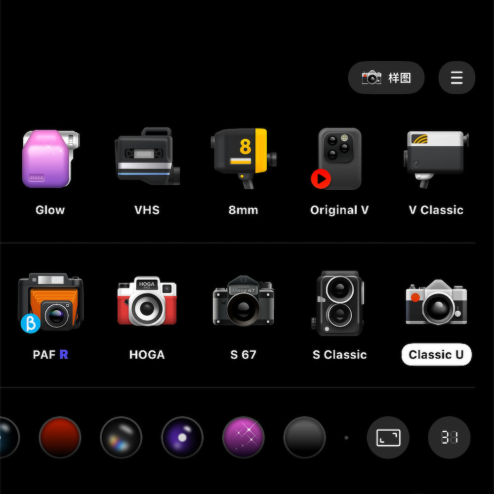
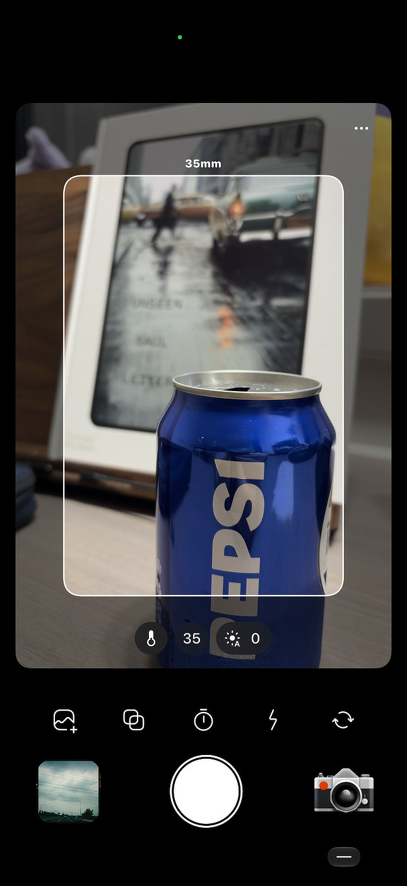

使用感受
最近迷上一款相机APP，里面内置有许多相机，我主要用来拍照，当然也可以拍视频。
有些相机还能选择色调与边框以及日期格式等。也可以直接导入照片重新生成不同色调的照片。对于喜欢拍照且喜欢折腾胶片色调的人来说，是个不错的APP。关键是至少能吸引我多拿出手机来拍照。我想这就足够了。


Dazz Cam 将多种复古相机、色调、边框和日期样式收进手机里，也可为已有照片重新赋予不同的胶片气息。
最近迷上一款相机APP，里面内置有许多相机，我主要用来拍照，当然也可以拍视频。
有些相机还能选择色调与边框以及日期格式等。也可以直接导入照片重新生成不同色调的照片。对于喜欢拍照且喜欢折腾胶片色调的人来说，是个不错的APP。关键是至少能吸引我多拿出手机来拍照。我想这就足够了。

